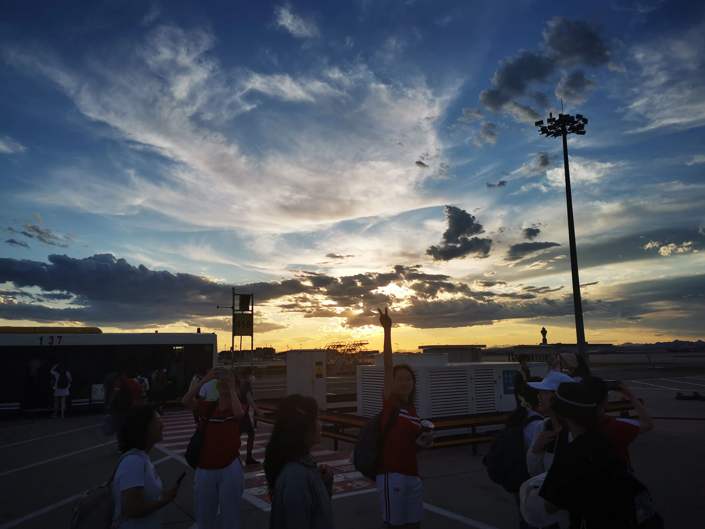

我认出风暴而激动如大海
我舒展开来又卷缩回去
我挣脱自身，独自置身于伟大的风暴中
—— 里尔克
寻找感官与思想的平衡点对我而言一直是令人愉悦却艰难的。
今年入春的那些天里，我在一个星期日的午后把自己置身轻薄到令人窒息的空气里，庆幸自己从没有因过敏受过被迫与万物复苏隔离的灾难。本来期待将感官充分浸泡于自然的空气中，但当与世界的连接点完全建立在浑身上下密集的神经通路上时，却第一次强烈地感知到周身世界的人造性。这种感觉如此强烈，强烈到开始认为自己浮在空中，强烈到要打翻我的基底。人类浑身都裹着机械的产品，时间久了，身体就没有知觉了；就像我们浑身都裹着无数割裂的想法，时间久了，大脑不再积极思考每一个存在事物的合理性了。但总有一些方法可以使我们保持清醒。学习社会科学的神奇之处就在于它让我暂时性逃脱这样的适应性。就像刚刚过去的一周里，从最第一秒开始就是彻底的mind blowing。有关New York accent的讨论用它自己独特的多缺陷和多视角不断击垮我新鲜又固执的认知体系。五天一共十个小时的seminar让我不断意识到从小的用于学习的体系和学习的内容是多么局限和"规矩"，以至于如此明确的对与错区分甚至无法让我在洪流般的观点中立下落脚点。我开始不断地怀疑与自我怀疑，企图拒绝无数正在分割我的主义。但越是有这样的企图，越发觉它们中间无法被分离的张力。后来，我幸运地发现这样的张力可以倒过来，围成和明晰不同理论的边界。应该被投入兴趣的是问题本身，而不是它的研究方法所被分在的维度，因为多数时候问题的研究维度广泛且无法定义。我开始避免持续维护一门学科的合理性和崇高性，它的冠词就已经决定了它潜在的局限性。连续高强度的输入和输出使我在越来越全面地质疑、批判、怀疑和接受中逐渐趋近于一个更加全面客观的观点，趋紧社科学习的本质。

摄于2022年10月1日，西灣湖廣場，澳门。
前几日翻相册，看到一张初升高暑假坐在学而思看着手里托福阅读一筹莫展的照片。回想2021年好像已经是很久很久以前的日子了，那个夏天包含着许多东西一起消融在了记忆里。以那时为起行的远点，我愈发感慨在过去两年内被不断击碎的那个幼态的外壳，她正带着我加长版的"童年"悄然离去。
不奇怪的是，我时常怀疑自己在背道而驰。越是了解美本申请，越是发觉周围被框定的思维通路时常在舍本逐末。会一边看似清醒地质疑着道路尽头那扇大门的公平存在，又一边义无反顾地想冲在这新一种形式的潜规则的最前列。其实它的过程并不复杂，总结下来就是不断地在"一厢情愿地跳入火坑"，只是在跳之前对坑底有何物一无所知。在此期间我遇见了从未设想过的不公、虚伪、和表演式的自我欺骗。他们存在、持续，不会因为外界因素的影响而动摇，甚至自己给自己层层加码。他们一幕幕在面前上演，又戏剧性地在不经意间消失于生活的边界。继而发觉自己对很多事情愤怒得纯粹、愤怒得幼稚、愤怒得无力，后来便也不再感到愤怒了。既然永远无法置身于一个完美的体系，那么就永远无法脱离缺陷。我们只是不断从一个自带缺陷的循环进入另一个，并不断对自己默念：坚信着总有一天会逃离。会在挣扎中怀疑、在怀疑中挣扎，在接踵而至的平衡木上屡次三番跌掉，在左与右的抉择中找不到出口，就像黄昏时弥漫的青烟在湿热的空气中凝固，诗人掐断烟头，万物停滞。

摄于2023年6月1日夜晚，维多利亚港，香港。
在上个迅速消逝的春天，我实现了一个很久以来的愿望。像朴树在旅途中写「我们路过幸福，路过痛苦，路过生命中漫无止境的寒冷和孤独」。我把自己拆解，把心掰成小块、揉碎，献给艺术，献给剧组。三月的一个星期日的傍晚，我看着夕阳一寸寸啃噬着天桥的不锈钢，消失在地平线尽头，相机里三十条慢动作直接把内存卡占去了三分之一，几米的路来回走了三十一遍。在拥挤不堪的88路公交车上，我们从二龙路一直坐到大观园再坐回来，只为捕捉到力度最恰到好处的开场镜头。深紫融化了暮色，路边在春天盛开的山桃花比风轻盈。六月，再次回到一个熟悉、活泛、坚韧的剧组。在这里，和人们的相处总是清晰且易逝的。时光从国际部地下三层用垫子搭起来的小窝和四会堂舞台上企图锯开原木的小刀中溜走。当灵魂失去庙宇，雨水就会落在心上。一群同龄人共同完成一个有关音乐的梦想，它没有胜利或成功可言，Fanile结束的时刻才是起点。那是一个充满魔力的艺术形式，因为它超乎了「艺术作品究竟是为了表达自身状态还是引起大众共鸣」的讨论范畴。音乐剧自己就是改变本身。它坦然连接表演者与观众的心灵，覆盖面大于任何其他事物的表演形式。所以再问我：目的地重要吗？现在觉得，到达哪里已经不重要了，重要的是起行。相比直接获得最后的结果，我更愿意留下最鲜红的脉搏、最纯白的信仰。我更希望享受固执到没有理由的过程。

摄于2023年6月10日，北京首都国际机场。
以生日或新年为截点，人们常常会分割自己的过去与未来。而我说，过去与未来从不是Half&Half，而是Both，从始至终，就像无需再挣扎于感官和思想的平衡，他们已经合二为一。我不曾想推翻过去的一切重新来过，也从不曾想在一年不到的时间内做出太过巨大的改变。所有的过去拼凑成了现在的我，来自过去，走向过去，在一次次自由的往返中走向未来，存在于此时和彼时。过去的一年是从挣扎到舍离，从熟稔到释怀，从愚蠢的清醒到下一个阶段的无知。得以在探索的道路上重新铺设、摆脱桎梏、吐故纳新、继续行走于时间的裂缝。十七岁，依旧是重复了十七年的夙愿。希望自己可以清晰且自由地长大，获得一切需要直面的勇气，在拥抱不确定性的同时获得反脆弱性。拒绝顿感，拒绝把瞬时形成的下意识不解和质疑无声地压踩在脚下。渴望the heart-stopping waves of hurt，渴望纯粹的痛苦、纯粹的快乐，以及，向每年一次的神圣日子借一点力气，祈求那无法奢求的一点幸运。
感谢身边所有一直爱着我的人们，感谢你们给我带来的一切，无论是迎风招展的笑容还是无声滴落的泪水。感谢在你们中间，我成为了我、并回馈我的爱。愿我们永远幸福。连接人与人的都并非只有强大的理性。在那些艰难的时刻，易碎的脆弱在靠近的氤氲呼气中吐露，在凌晨一点疲惫不堪的墨绿色亚麻沙发上残留。它们在争吵后的平静里顺着湿漉漉的脸颊流下，在异国他乡的陌生城市中浓缩在长长的电话线里。这些时刻，生命以脆弱为内核。于是一切重新化繁为简，我切实以苏生。驻足，旋即跃进另一种思维——周身的一切共同构成生命。轻声祝愿自己步入第十七年的冒险，看苍白的河水闪烁着微光。细碎的空气从每一个张开的毛孔嵌入沸腾流动的血液，深邃而嘹亮。
2023年6月30日
New York City